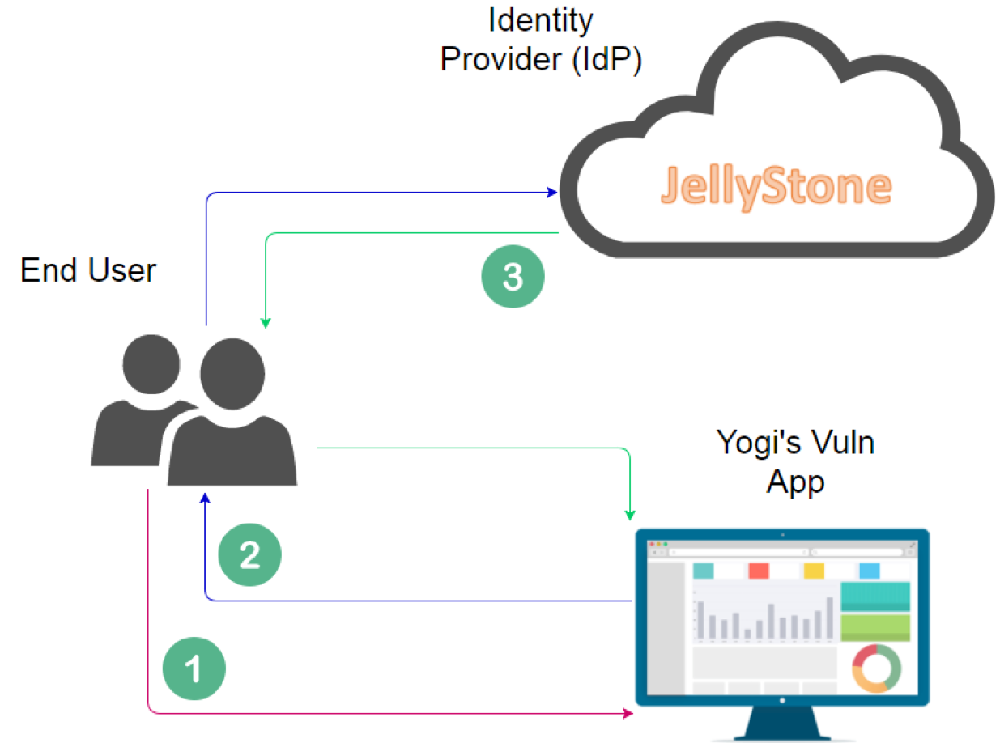
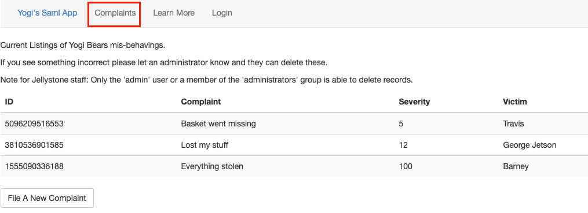

saml
What is it
According to RFC7522 "the Security Assertion Markup Language (SAML) 2.0 is an XML-based framework that alllows identity and security information to be shared across security domains." In a nutshell SAML provides a way to tell a web application you are who you say you are without having to maintain a user/password database within each web application users access. Instead the authentication occurs at a trusted identity provider (IDP) and authorization is left to the web application which people are trying to access once they authenticate with the IDP.
Terms:
- Identity Provider (IDP): This is the server that handles the authentication. In the test environment below the IDP is the 'Jellystone IDP.' This is the platform you prove you are who you say you are. An IDP may have back end connections to AD, or it could check against another database of users. IDPs can also help to easily implment mutli-factor authentication. Removing the burden from the application developer.
- Service Provider (SP): This is the application a user is attempting to access. In the case of the example below the SP is 'Yogi's SAML App'.
- Client: This is you. A client is anyone or anything that is sending a request to the SP.
How Does it Work
SAML has a couple different authentication flows, the IDP initiated flow and the service provider initiated flow. Once the user reaches the IDP the flows are basically the same. For this writeup we will focus on the service provider initiated flow. Looking at the picture below we can see three high level steps for this flow.
Lets break these down:
- In this step the user browses to the web application (Service Provider) and selects the login button.
- The web application sends SAML request back to the browser and redirects it to the IDP. The browser relays the request to the IDP. The IDP prompts to user to to authenticate. With the defined requirements. This could be a username/password, MFA, both, etc.
- Once the user proves they are who they say they are the IDP generates a SAML assertion and sends it back to the browser and redirects the browser back to the Service Provider. The service provider confirms that the user should have access to the application and grants them access to resources they are allowed to access.
If the messages are not signed, or are signed but not valid the application should reject them. For example the three attacks below should all result in an assertion message being rejected:
- Attacker removes the signature and edits the message - Unsigned message
- Attacker leaves the signature and edits the message - Signed but not valid message
- Attacker edits the message and resigns it - Signed but not valid message/signature
Message Breakdown
Request: I'd Like to Login
GET /?sso2 HTTP/1.1
Host: http://yogivulnerablesaml.jellystone.com:8000
User-Agent: Mozilla/5.0 (Macintosh; Intel Mac OS X 10.14; rv:65.0) Gecko/20100101 Firefox/65.0
Accept: text/html,application/xhtml+xml,application/xml;q=0.9,image/webp,*/*;q=0.8
Accept-Language: en-US,en;q=0.5
Accept-Encoding: gzip, deflate
Referer: http://yogivulnerablesaml.jellystone.com:8000/
Connection: close
Upgrade-Insecure-Requests: 1
Response: Sure heres some information, go auth to this IDP
HTTP/1.1 302 FOUND
Content-Type: text/html; charset=utf-8
Content-Length: 1795
Location: http://idp.jellystone.com/simplesamlphp/saml2/idp/SSOService.php?SAMLRequest=fVNNj9owEL3vr0C59ETsOMBmLUhFoR9IFCKSVmovlbGHxVJip7azS%2F99nYSltOriQyzNzHvz%2FGYytawqazpv3FHt4GcD1t0N%2FDlVpbK0S86CxiiqmZWWKlaBpY7TfP55TUmIaW2001yXwT%2Bw2yhmLRgntephq%2BUs2G7er7cfV5sfJOZjwkWCWUSAPMR7IGx0EII8sEk8IYLsR3Fyn0AP%2FQrGep5Z4Gn7SGb0kxRgNr7rLPimH%2BUbO8izcydrG1gp65hyHoMJHuLJkEyKaEJxREn0va9beiOkYq6jPjpXU4SiJCQxCcdRGOF7ZGVVl9A5dKxRexMkRY3yfJuDeZIcQp%2B4SOpMeieVkOrxtjf7vsjST0WRDbNtXvQk8xfPFlrZpgJzbvNlt75IjL3CcRglJBzRBGOM3jJue3jafaetUNq5YNLXQBU4JphjaIquy%2F8Q1LQ1d7XMdCn5ry7eng%2FaVMy9%2FjpvXBeRYnjoSmmjbA1cHiSI4EIzL0v9vDDAnJ%2BfMw0EA%2FRX8%2FOigujW1tvh4OQGC13VzEjbTgxOjLsgvVD2z74uX5R%2BB3dwSG%2BuKae8rfPhzF%2FP2oh2lMB978IwL14bdzbpv%2BS9anRDdnr3kr7%2BB9Pf&RelayState=http%3A%2F%2Fyogivulnerablesaml.jellystone.com%3A8000%2Fprofile%2F
The SAMLRequest highlighted above is a base64 encoded xml payload. If we decode it we get the information below:
<?xml version="1.0" encoding="UTF-8"?>
<samlp:AuthnRequest
AssertionConsumerServiceURL="http://yogivulnerablesaml.jellystone.com:8000/?acs"
Destination="http://idp.jellystone.com/simplesamlphp/saml2/idp/SSOService.php"
ID="ONELOGIN_23c52cd80a12e293be2a4fdd29a6362d2b43878e"
IssueInstant="2020-06-26T16:01:21Z"
ProtocolBinding="urn:oasis:names:tc:SAML:2.0:bindings:HTTP-POST"
ProviderName="Yogi's SP"
Version="2.0"
xmlns:saml="urn:oasis:names:tc:SAML:2.0:assertion"
xmlns:samlp="urn:oasis:names:tc:SAML:2.0:protocol">
<saml:Issuer>
http://yogivulnerablesaml.jellystone.com:8000/metadata/
</saml:Issuer>
<samlp:NameIDPolicy
AllowCreate="true"
Format="urn:oasis:names:tc:SAML:1.1:nameid-format:unspecified"/>
<samlp:RequestedAuthnContext Comparison="exact">
<saml:AuthnContextClassRef>
urn:oasis:names:tc:SAML:2.0:ac:classes:PasswordProtectedTransport
</saml:AuthnContextClassRef>
</samlp:RequestedAuthnContext>
</samlp:AuthnRequest>
Once we've decoded the payload there isn't much to it. Rember at this point in the process the user has not authenticated yet, they have just started the process. The payload above is what the Service Provider gives to the user to then provide to the Identity Platform. Let's break down the three fields highlighted above:
- AssertionConsumerServiceURL: This field is the return address. Basically this is where we tell the IDP to point us to once we've successfully authenticated.
- ID: This field is a transaction ID for this entire login request. Its how the service provider knows which session to attribute our authenticate request to. It becomes important later.
- ProviderName: If this is filled in, its just the name of the SP. From a logging standpoint it is very helpful.
Response: Welcome to the IDP, go here and fill this form out
IDP responds with a 302 to a login page the redirect also includes auth information
HTTP/1.1 302 Found
Date: Fri, 26 Jun 2020 16:01:21 GMT
Server: Apache/2.4.18 (Ubuntu)
Set-Cookie: PHPSESSID=1b1500050c1336f7bf7932336ccc957f; path=/; HttpOnly
Expires: Thu, 19 Nov 1981 08:52:00 GMT
Cache-Control: no-cache, must-revalidate
Pragma: no-cache
Location: http://idp.jellystone.com/simplesamlphp/module.php/core/loginuserpass.php?AuthState=_a87e532c1d8e81a590e643b9a38caba90d77c86a31%3Ahttp%3A%2F%2Fidp.jellystone.com%2Fsimplesamlphp%2Fsaml2%2Fidp%2FSSOService.php%3Fspentityid%3Dhttp%253A%252F%252Fyogivulnerablesaml.jellystone.com%253A8000%252Fmetadata%252F%26cookieTime%3D1593187281%26RelayState%3Dhttp%253A%252F%252Fyogivulnerablesaml.jellystone.com%253A8000%252Fprofile%252F
Content-Length: 1267
Connection: close
Content-Type: text/html; charset=UTF-8
Request: Here is my username and password
Post request to the IDP
POST /simplesamlphp/module.php/core/loginuserpass.php? HTTP/1.1
Host: idp.jellystone.com
User-Agent: Mozilla/5.0 (Macintosh; Intel Mac OS X 10.14; rv:65.0) Gecko/20100101 Firefox/65.0
Accept: text/html,application/xhtml+xml,application/xml;q=0.9,image/webp,*/*;q=0.8
Accept-Language: en-US,en;q=0.5
Accept-Encoding: gzip, deflate
Referer: http://idp.jellystone.com/simplesamlphp/module.php/core/loginuserpass.php?AuthState=_a87e532c1d8e81a590e643b9a38caba90d77c86a31%3Ahttp%3A%2F%2Fidp.jellystone.com%2Fsimplesamlphp%2Fsaml2%2Fidp%2FSSOService.php%3Fspentityid%3Dhttp%253A%252F%252Fyogivulnerablesaml.jellystone.com%253A8000%252Fmetadata%252F%26cookieTime%3D1593187281%26RelayState%3Dhttp%253A%252F%252Fyogivulnerablesaml.jellystone.com%253A8000%252Fprofile%252F
Content-Type: application/x-www-form-urlencoded
Content-Length: 328
Connection: close
Cookie: PHPSESSID=1b1500050c1336f7bf7932336ccc957f
Upgrade-Insecure-Requests: 1
username=yogi&password=bear&AuthState=_a87e532c1d8e81a590e643b9a38caba90d77c86a31%3Ahttp%3A%2F%2Fidp.jellystone.com%2Fsimplesamlphp%2Fsaml2%2Fidp%2FSSOService.php%3Fspentityid%3Dhttp%253A%252F%252Fyogivulnerablesaml.jellystone.com%253A8000%252Fmetadata%252F%26cookieTime%3D1593187281%26RelayState%3Dhttp%253A%252F%252Fyogivulnerablesaml.jellystone.com%253A8000%252Fprofile%252F
The IDP responds with a 200 OK and executes javascript to make post request to the Service Provider with the assertion payload. The post request to the Service provider is below:
Request: I'm back and I am who I say I am, here is my proof
POST /?acs HTTP/1.1
Host: yogivulnerablesaml.jellystone.com:8000
User-Agent: Mozilla/5.0 (Macintosh; Intel Mac OS X 10.14; rv:65.0) Gecko/20100101 Firefox/65.0
Accept: text/html,application/xhtml+xml,application/xml;q=0.9,image/webp,*/*;q=0.8
Accept-Language: en-US,en;q=0.5
Accept-Encoding: gzip, deflate
Referer: http://idp.jellystone.com/simplesamlphp/module.php/core/loginuserpass.php?
Content-Type: application/x-www-form-urlencoded
Content-Length: 10153
Connection: close
Upgrade-Insecure-Requests: 1
SAMLResponse=PHNhbWxwOlJlc...truncated based 64 blob...&RelayState=http%3A%2F%2Fyogivulnerablesaml.jellystone.com%3A8000%2Fprofile%2F
Whats in the truncated based64 blob? Its our assertion payload that contains the signing information, the identity information, and metadata about the message. There are sever parts to it but for this write up we care about the Signature portion, and the Assertion portion. WHen we decode the blob we are presented with xml data. Lets take a look at the message. For the next few sections I've broken up the entire message into smaller chunks for readability
<?xml version="1.0" encoding="UTF-8"?>
<samlp:Response Destination="http://yogivulnerablesaml.jellystone.com:8000/?acs"
ID="_680413d1f1dbb580a36385e5f6bcb985d5bb2404bd"
InResponseTo="ONELOGIN_23c52cd80a12e293be2a4fdd29a6362d2b43878e"
IssueInstant="2020-06-26T16:01:31Z" Version="2.0"
xmlns:saml="urn:oasis:names:tc:SAML:2.0:assertion"
xmlns:samlp="urn:oasis:names:tc:SAML:2.0:protocol">
<saml:Issuer>
http://idp.jellystone.com/simplesamlphp/saml2/idp/metadata.php
</saml:Issuer>
<ds:Signature xmlns:ds="http://w3.org/...">
<ds:SignedInfo>
<ds:CanonicalizationMethod Algorithm="http://w3.org/..."/>
<ds:SignatureMethod Algorithm="http://w3.org/..."/>
<ds:Reference URI="#_680413d1f1dbb580a36385e5f6bcb985d5bb2404bd">
<ds:Transforms>
<ds:Transform Algorithm="http://w3.org/..."/>
<ds:Transform Algorithm="http://w3.org/..."/>
</ds:Transforms>
<ds:DigestMethod Algorithm="http://w3.org/..."/>
<ds:DigestValue>LDuhdC47bWPLtaWR+DifMF5Ad/s=</ds:DigestValue>
</ds:Reference>
</ds:SignedInfo>
<ds:SignatureValue>truncated=</ds:SignatureValue>
<ds:KeyInfo>
<ds:X509Data>
<ds:X509Certificate>certificate bits</ds:X509Certificate>
</ds:X509Data>
</ds:KeyInfo>
</ds:Signature>
<samlp:Status>
<samlp:StatusCode Value="urn:oasis:names:tc:SAML:2.0:status:Success"/>
</samlp:Status>
<saml:Assertion ID="_59c561cc8e12b4cfab5c0f2d1d55ce541028d3342a"
IssueInstant="2020-06-26T16:01:31Z" Version="2.0"
xmlns:xs="http://w3.org/..." xmlns:xsi="http://w3.org/...">
<saml:Issuer>
http://idp.jellystone.com/simplesamlphp/saml2/idp/metadata.php
</saml:Issuer>
<ds:Signature xmlns:ds="http://w3.org/...">
<ds:SignedInfo>
<ds:CanonicalizationMethod Algorithm="http://w3.org/..."/>
<ds:SignatureMethod Algorithm="http://w3.org/..."/>
<ds:Reference URI="#_59c561cc8e12b4cfab5c0f2d1d55ce541028d3342a">
<ds:Transforms>
<ds:Transform Algorithm="http://w3.org/..."/>
<ds:Transform Algorithm="http://w3.org/..."/>
</ds:Transforms>
<ds:DigestMethod Algorithm="http://w3.org/..."/>
<ds:DigestValue>cSXkNHBuvGm64eH1ldvgm8n1ArY=</ds:DigestValue>
</ds:Reference>
</ds:SignedInfo>
<ds:SignatureValue>signature bits</ds:SignatureValue>
<ds:KeyInfo>
<ds:X509Data>
<ds:X509Certificate>certificate bits</ds:X509Certificate>
</ds:X509Data>
</ds:KeyInfo>
</ds:Signature>
<saml:Subject>
<saml:NameID
Format="urn:oasis:names:tc:SAML:2.0:nameid-format:transient"
SPNameQualifier="http://yogivulnerablesaml.jellystone.com:8000/metadata/">_77a94f4b52ba9f7fd80ac091a8c561136b697837d2
</saml:NameID>
<saml:SubjectConfirmation Method="urn:oasis:names:tc:SAML:2.0:cm:bearer">
<saml:SubjectConfirmationData
InResponseTo="ONELOGIN_23c52cd80a12e293be2a4fdd29a6362d2b43878e"
NotOnOrAfter="2020-06-26T16:06:31Z"
Recipient="http://yogivulnerablesaml.jellystone.com:8000/?acs"/>
</saml:SubjectConfirmation>
</saml:Subject>
<saml:Conditions
NotBefore="2020-06-26T16:01:01Z"
NotOnOrAfter="2020-06-26T16:06:31Z">
<saml:AudienceRestriction>
<saml:Audience>http://yogivulnerablesaml.jellystone.com:8000/metadata/</saml:Audience>
</saml:AudienceRestriction>
</saml:Conditions>
<saml:AuthnStatement
AuthnInstant="2020-06-26T16:01:31Z"
SessionIndex="_f2d9382c86855d907f7462337c2a0716cdeae5fde5"
SessionNotOnOrAfter="2020-06-27T00:01:31Z">
<saml:AuthnContext>
<saml:AuthnContextClassRef>
urn:oasis:names:tc:SAML:2.0:ac:classes:Password</saml:AuthnContextClassRef>
</saml:AuthnContext>
</saml:AuthnStatement>
<saml:AttributeStatement>
<saml:Attribute
Name="memberOf"
NameFormat="urn:oasis:names:tc:SAML:2.0:attrname-format:uri">
<saml:AttributeValue xsi:type="xs:string">
users
</saml:AttributeValue>
</saml:Attribute>
<saml:Attribute
Name="firstName"
NameFormat="urn:oasis:names:tc:SAML:2.0:attrname-format:uri">
<saml:AttributeValue xsi:type="xs:string">
Yogi
</saml:AttributeValue>
</saml:Attribute>
<saml:Attribute
Name="lastName"
NameFormat="urn:oasis:names:tc:SAML:2.0:attrname-format:uri">
<saml:AttributeValue xsi:type="xs:string">
Bear
</saml:AttributeValue>
</saml:Attribute>
<saml:Attribute
Name="username"
NameFormat="urn:oasis:names:tc:SAML:2.0:attrname-format:uri">
<saml:AttributeValue xsi:type="xs:string">
yogi
</saml:AttributeValue>
</saml:Attribute>
<saml:Attribute
Name="urn:oid:1.2.840.113549.1.9.1"
NameFormat="urn:oasis:names:tc:SAML:2.0:attrname-format:uri">
<saml:AttributeValue xsi:type="xs:string">
yogi@jellystonep.com
</saml:AttributeValue>
</saml:Attribute>
</saml:AttributeStatement>
</saml:Assertion>
</samlp:Response>
At this point the Service provider should validate the message, and confirm that the user (Subject) that is requesting access is authorized to access resources within the application. If they are provie them with a 302 redirect to some page within the application now that they are authorized.
Setting up test environment
Now that we have a decent understanding of the authentication flow for SAML, and the types of messages we can expect to see, lets set up our vulnerable SAML app and start to exploit some vulnerable configurations.
Quick and Easy Deployment
The easiest way to get everything up and running is by cloning the repository and then simply running a quick docker-compose command. The compose command will build the images, and deploy them to the local host.
git clone https://github.com/yogisec/VulnerableSAMLApp.git
cd VulnerableSAMLApp
sudo docker-compose up
http://127.0.0.1:8000. The IDP will be listening at http://127.0.0.1. Head down to the Features section for login details and more information about the applications.
Split Host Deployment
In order to split the deployment across two seperate hosts (one an IDP, and the other a SP). We need to change some configuration details.First clone the repository onto both hosts:
git clone https://github.com/yogisec/VulnerableSAMLApp.git
cd VulnerableSAMLApp
configure_platform.py script. Work through the prompts filling in the information as requested to make the necessary edits to the IDP configuration files.
Once completed we need to build our IDP container. We can do that with the following command:
cd vulnerableidp
sudo docker build -t idp:1.0 .
This will build a container with the name idp and the tag 1.0. Next run the container with:
sudo docker run -it --rm --name idp -d -p 80:80 idp:1.0
Confirm the container is running by running:
sudo docker ps
If its running we should see an output similar to:
189adee1b091 localhost/idp:1.0 apache2ctl -D FOR... 2 seconds ago Up 2 seconds ago 0.0.0.0:80->80/tcp idp
We can confirm the IDP is listening by running curl:
curl http://127.0.0.1
Next on the Service Provider host run the configure_platform.py script. Work through the prompts filling in the information as requested to make the necessary edits to the application configuration files.
Once completed we need to build our container. We can do that with the following command:
cd vulnerablesp
sudo docker build -t sp:1.0 .
This will build a container with the name sp and the tag 1.0. The next step is to run the container. This can be done with:
sudo docker run -it --rm --name sp -d -p 8000:8000 sp:1.0
We can confirm the container is running by issuing:
sudo docker ps
This should produce an ouput similar to this:
94476aee1abf sp:1.1 "uwsgi --ini vulnsp.…" 4 minutes ago Up 4 minutes 0.0.0.0:8000->8000/tcp sp
We can confirm the application is up and listening by curling the interface with:
curl http://127.0.0.1:8000
Features of the environment
Login credentials can be found here: https://github.com/yogisec/VulnerableSAMLApp#login-credentials
After successfully logging in we are presented with our profile as seen by the application. This is a quick and easy way to confirm which user we are, as well as our current group membership.

The complaints tab is where all of the complaints are stored and is the overall goal of the application.
In the screenshot below we have authenticated with the admin user account and have a new capability to delete complaints.

The instructor account has several special features to help maintain order within the application. There is a 'restore Complaints' button on the complaints page that reverts all of the complaits back to the starting state of the application.
The instructor account also has a new tab called Saml Settings. Within this tab we can make the application more or less security by checking the features we want to have turned on or off.
The Scenarios
| Setting | Description |
|---|---|
| Valid Assertion | |
| Want Messages Signed | |
| Valid Messages | |
| Sign MetaData | |
| CVE-2017-11427 | |
| Want Assertions Signed |
Valid Assertion
CVE-2017-11427
Valid Message
Want Messages Signed
Want Assertions Signed
References
Great References: